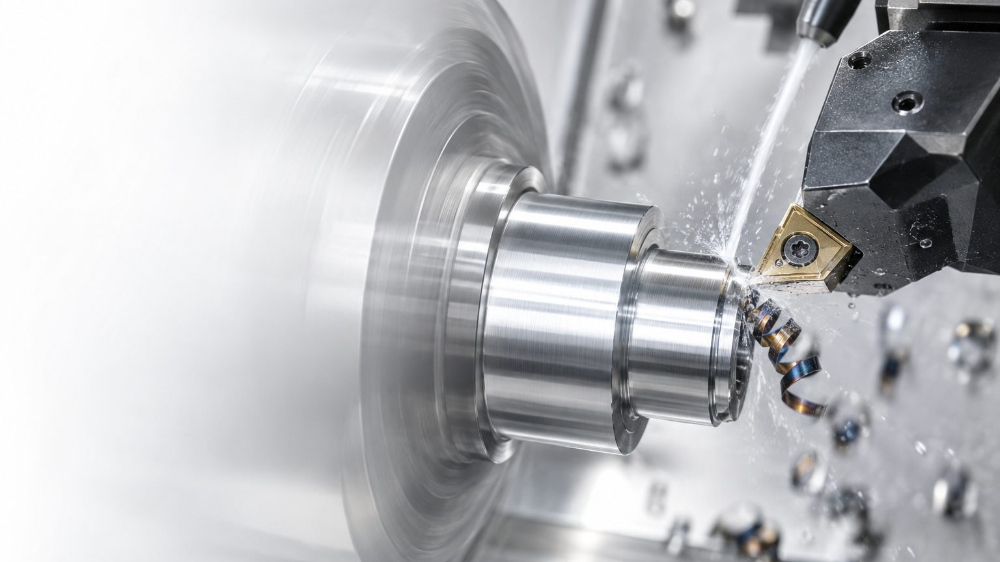
Инструмент и оснастка для станков с ЧПУ
Подбираем под вашу деталь, материал и станок — и доводим режимы на вашем оборудовании до стабильной серии.
Пластина вдвое дороже — деталь на 17 % дешевле
Дешёвая пластина, которая быстро изнашивается, обходится дороже: станок стоит, оператор меняет кромку, растёт брак. Поэтому варианты инструмента мы сравниваем в рублях на деталь.
Пример расчёта: 4 кромки на пластине, минута работы станка — 50 ₽. Цифры условные; для вашей операции технолог считает по реальным данным.
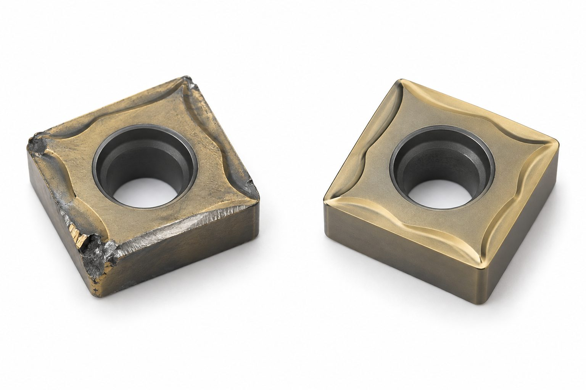
Что подбираем
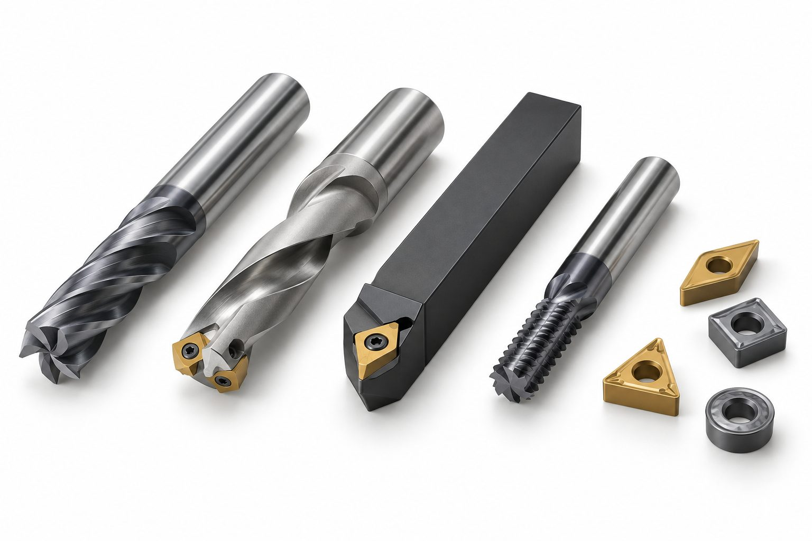
01Режущий инструмент
Пластины, фрезы, свёрла, резьбовой и расточной инструмент, специальный инструмент под деталь.
Подробнее →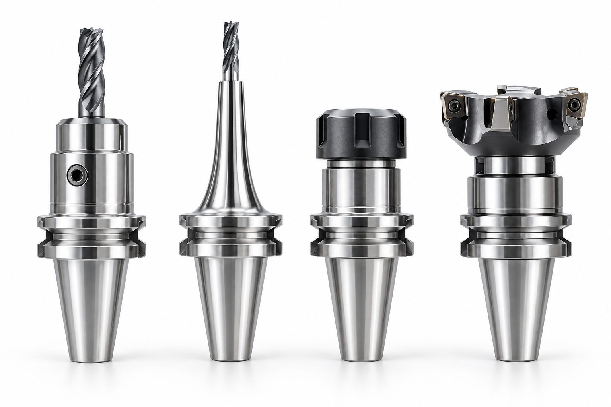
02Станочная оснастка
Патроны и оправки, зажим детали, 4-я и 5-я ось, специальные приспособления под установ.
Подробнее → 03
03Калькуляторы режимов
Обороты, подача, мощность, время цикла и стоимость детали — с формулами.
Открыть →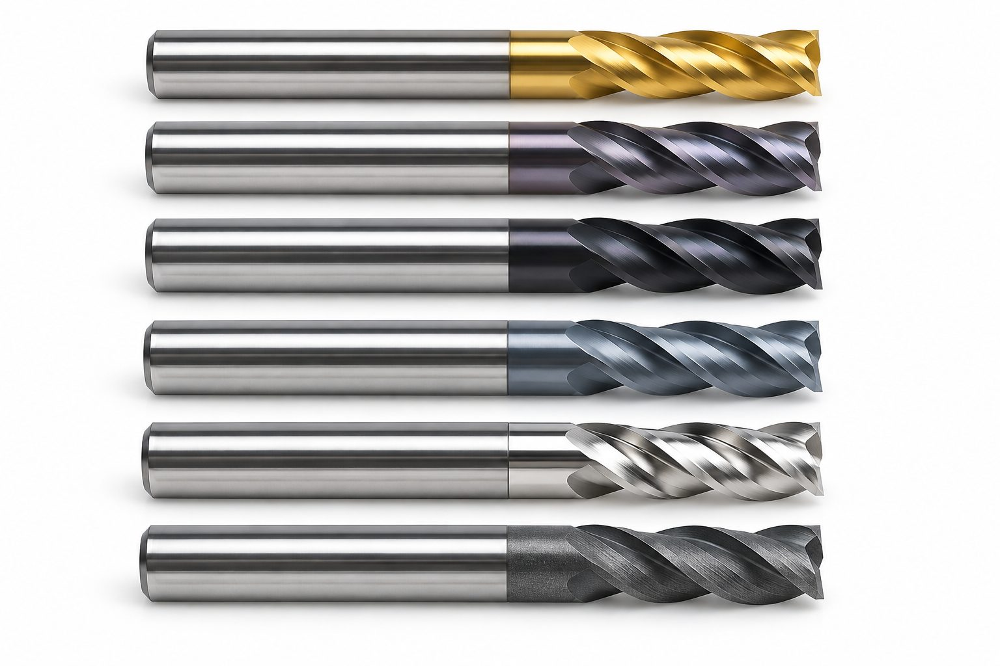
04Справочник технолога
Маркировка пластин, резьбы, шероховатость, твёрдость, виды износа.
Открыть →Подбор по операции
Стартовые режимы по материалам, типовые проблемы и их причины — для каждой операции.
С чем к нам приходят
Технолог сначала ищет причину по характеру износа и только потом предлагает инструмент.
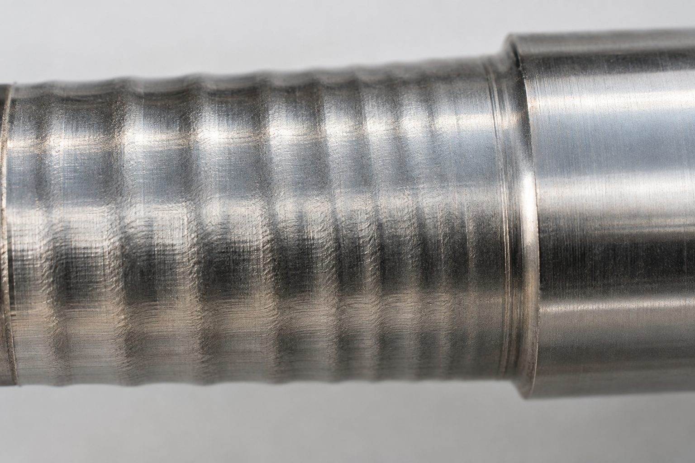
Вибрации и следы на поверхности
Регулярные волнистые следы на обработанной поверхности — дробление. Кромка работает неравномерно и быстро выходит из строя.
- Вылет и жёсткость закрепления инструмента
- Геометрию пластины и радиус при вершине
- Режимы: слишком малая подача тоже вызывает вибрацию
- Закрепление детали: люнет, задний центр, базирование
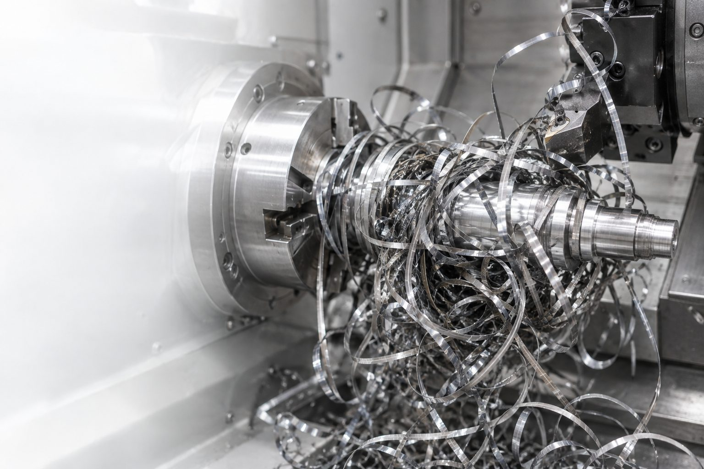
Стружка наматывается на деталь
Длинная сливная стружка путается вокруг детали и державки. Станок приходится останавливать, страдает поверхность.
- Подачу и глубину — попадают ли они в диапазон стружколома
- Геометрию пластины под вашу глубину резания
- Подвод СОЖ в зону резания
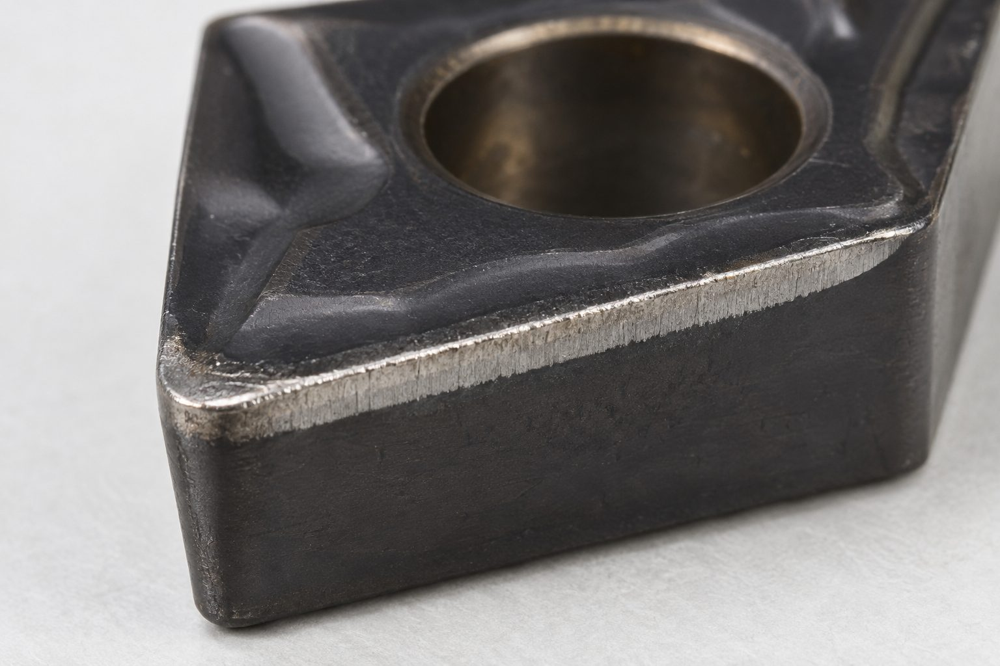
Быстрый износ по задней поверхности
Полоса износа вдоль кромки растёт быстрее расчётной: пластину приходится менять раньше, размер уходит по ходу партии.
- Скорость резания относительно рекомендаций
- Марку сплава и покрытие под материал и твёрдость
- Концентрацию и подачу СОЖ
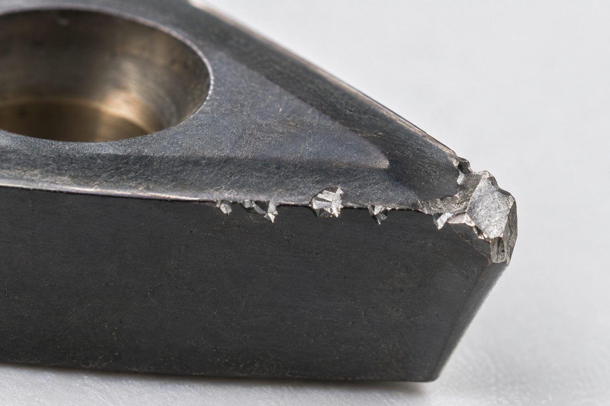
Выкрашивание и сколы кромки
Мелкие зазубрины и сколы вместо равномерного износа. Кромка разрушается раньше, чем изнашивается.
- Прерывистое резание и корку на заготовке
- Прочность геометрии и марки сплава
- Биение оправки и цанги
- Подачу на входе в материал
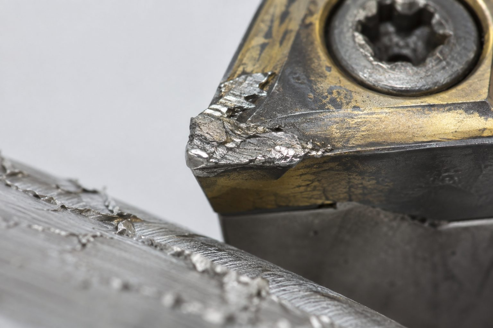
Нарост на кромке
Обрабатываемый металл налипает на кромку, срывается вместе с её частицами и рвёт поверхность детали.
- Скорость резания на вязких материалах
- Остроту и полировку передней поверхности
- Подачу и тип СОЖ
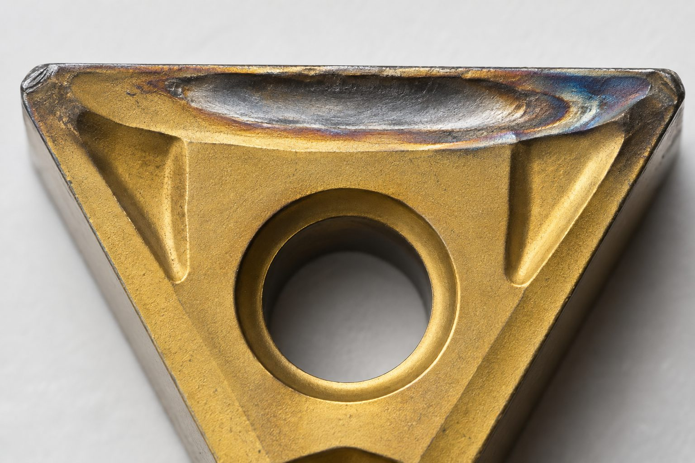
Лунка на передней поверхности
Углубление за кромкой растёт, пока кромка не ослабнет и не обломится. Признак высокой температуры в зоне резания.
- Скорость резания и температуру в зоне контакта
- Покрытие: нужна стойкость к лунке износа
- Подачу СОЖ в зону резания
Бренды инструмента и оснастки
17 производителей — от универсального точения до микроинструмента и приводных блоков. Бренд выбираем под операцию, а не операцию под бренд.
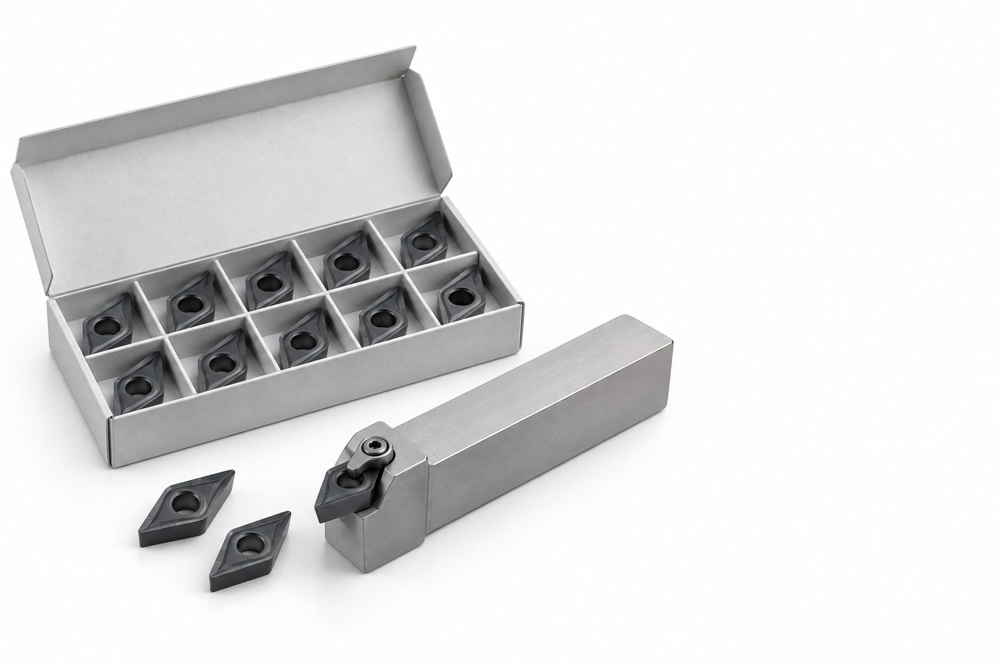
Собственная марка Механита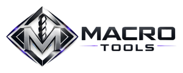
Токарный, фрезерный, сверлильный и расточной инструмент и оснастка. Технолог подбирает позиции под вашу деталь и проверяет их на производстве.
Страница бренда →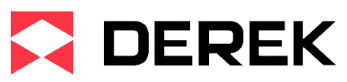
Инструментальная оснастка и режущий инструмент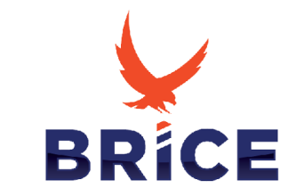
Российский твердосплавный инструмент и оснастка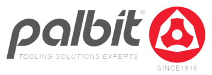
Твердосплавный инструмент и пластины- Резьба, канавки и отрезка
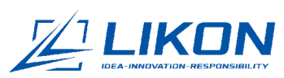
Инструмент и оснастка российской марки- Метчики, резьбовые фрезы, протяжной инструмент
- Пластины и фрезы для сложных материалов
- Монолитные фрезы, свёрла и развёртки
- Фрезы, свёрла и резьбовой инструмент
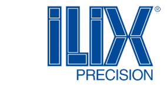
Свёрла, развёртки, зенкеры и метчики- Алмазный инструмент PCD
- Микросвёрла для миниатюрных деталей
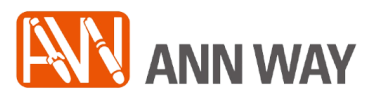
Инструментальная оснастка и расточные системы- Приводные блоки и угловые головки
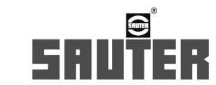
Револьверные головки и приводные блоки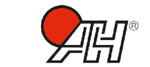
Цанги и направляющие втулки

Инструмент и оснастка к новому станку
Если вы берёте станок у Механита, комплект инструмента и оснастки под первую деталь подбираем вместе со станком. Отработка первой детали входит в пусконаладку — станок работает на вашей номенклатуре сразу после запуска.
Частые вопросы
Да. Инструмент и оснастку подбираем и под станки, которые уже работают на вашем производстве.
Чертёж или модель детали, материал и твёрдость, модель станка и стойки ЧПУ, конус шпинделя и размер партии. Если операция уже идёт — текущий инструмент, режимы и что не устраивает: стойкость, точность, цикл.
Подбираем замену по геометрии, марке сплава, покрытию и посадочному размеру и проверяем её на вашей детали. Новый вариант сравниваем со старым по стойкости и времени цикла.
Собственная инструментальная марка Механита: токарный, фрезерный, сверлильный и расточной инструмент и оснастка, которые технолог подбирает под конкретную деталь и проверяет на производстве.
Нужно оснастить операцию?
Пришлите чертёж, материал и партию — технолог предложит инструмент и оснастку с расчётом стоимости обработки детали.